What is Addiyon Keyboard?
An Android keyboard with Latin-to-Fidel transliteration, autocomplete, Ethiopic numerals, punctuation, and English QWERTY.
Type English letters and watch them become ፊደል, live. Get the complete Ge'ez script, Ethiopic numerals, and private offline suggestions in every app.
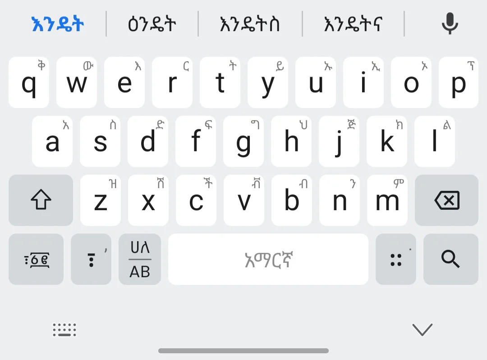
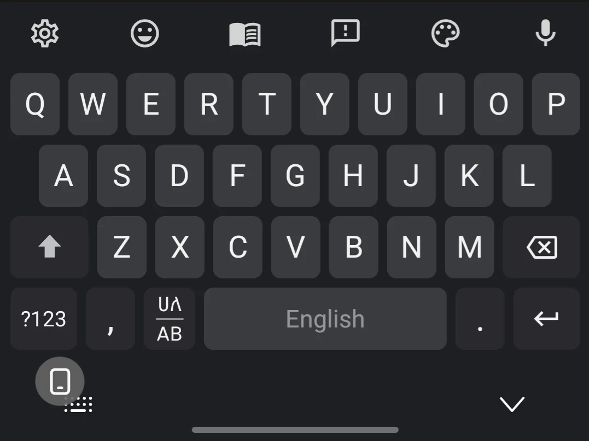
Built for Fidel input, Addiyon makes Amharic writing practical across chats, search, notes, documents, and social apps.
Type selam to compose ሰላም, use the full Amharic layout for direct control, or switch to English QWERTY.
Every Fidel letter across all seven orders, including special characters and labialized forms.
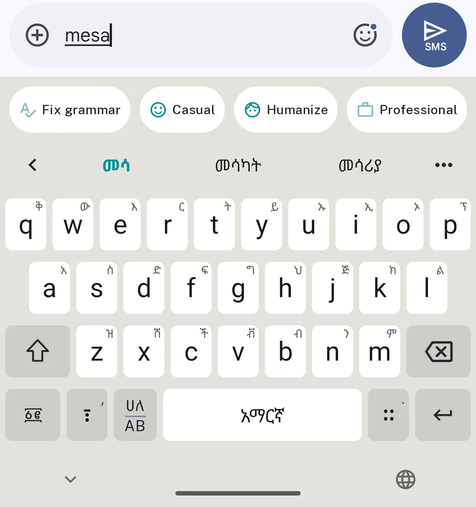
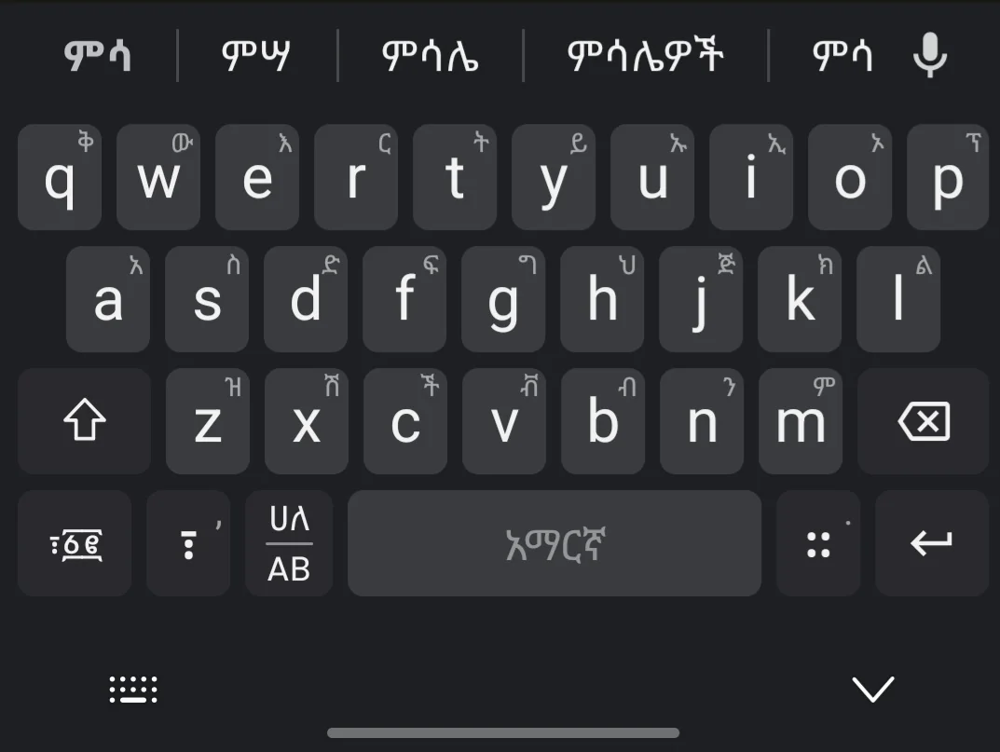
Write Ethiopic ones, tens, hundreds, and beyond in any app.
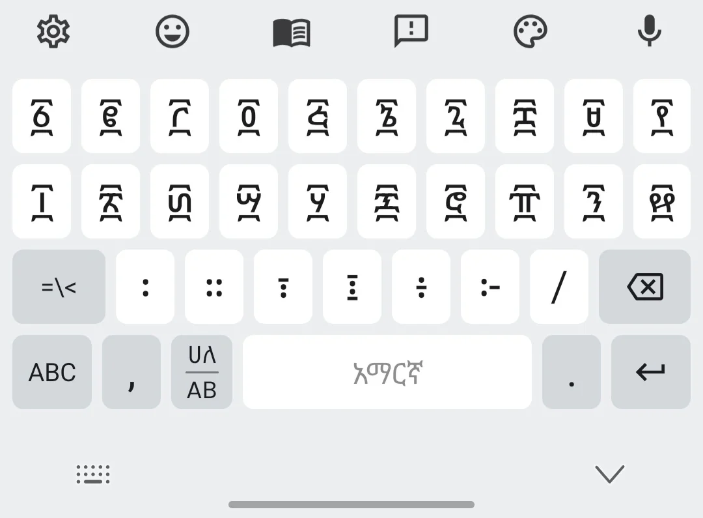
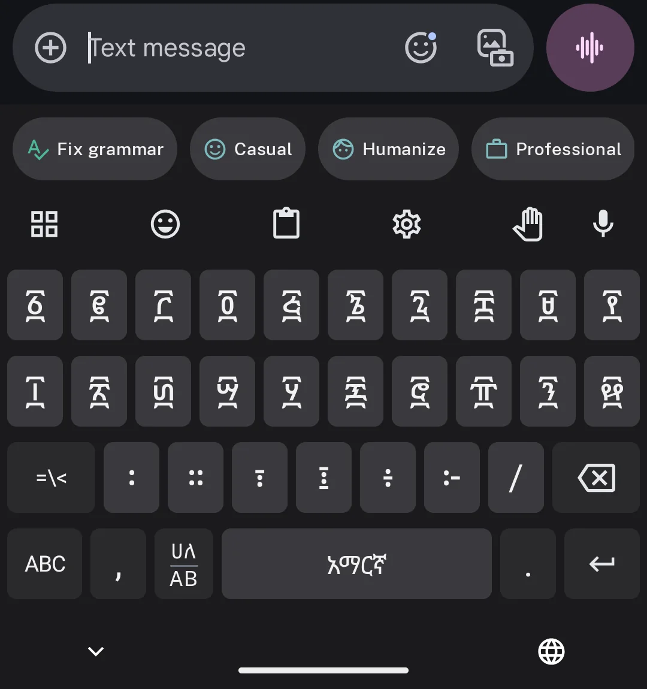
Tap the microphone and speak. Addiyon uses Android's speech-recognition service so you can dictate without leaving the keyboard.
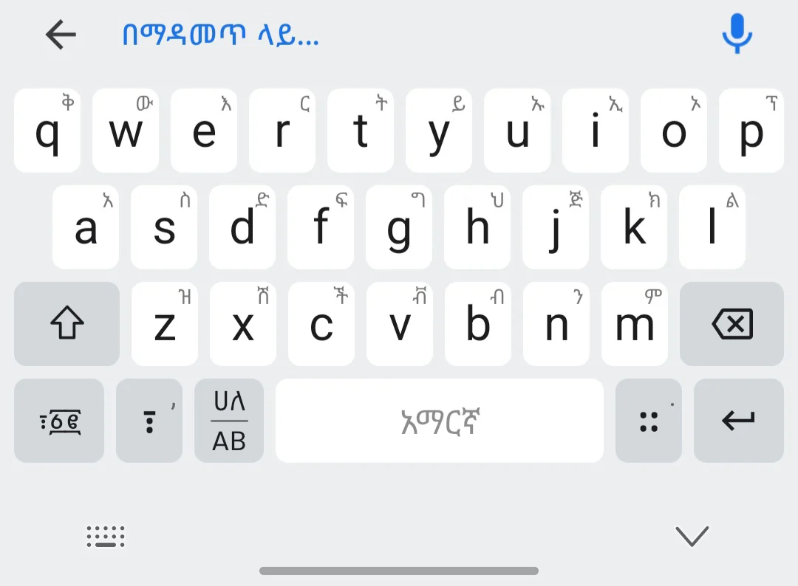
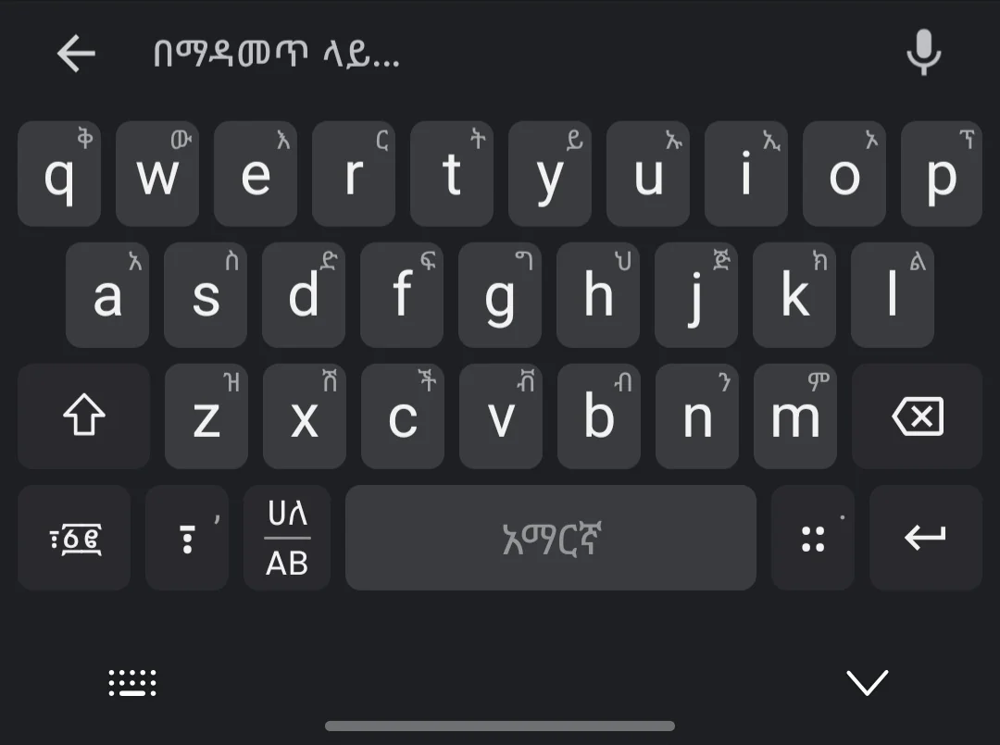
Type the sound and preview the Fidel word before you commit.
Get helpful suggestions without an internet connection.
Switch between Amharic and standard English QWERTY in one tap.
An Android keyboard with Latin-to-Fidel transliteration, autocomplete, Ethiopic numerals, punctuation, and English QWERTY.
Type a sound like selam. Preview ሰላም, then tap to commit it.
Yes—፩ ፪ ፫ ፲ ፻ ፼, plus Amharic punctuation and special characters.
Yes. Transliteration and suggestions run on your device. Your text is not sent to Addiyon.
Yes. As a system keyboard, Addiyon works anywhere Android lets you type.
No. Unlike a website tool, Addiyon works directly across Android apps.
Preview a few of the looks available and choose the style that fits you.
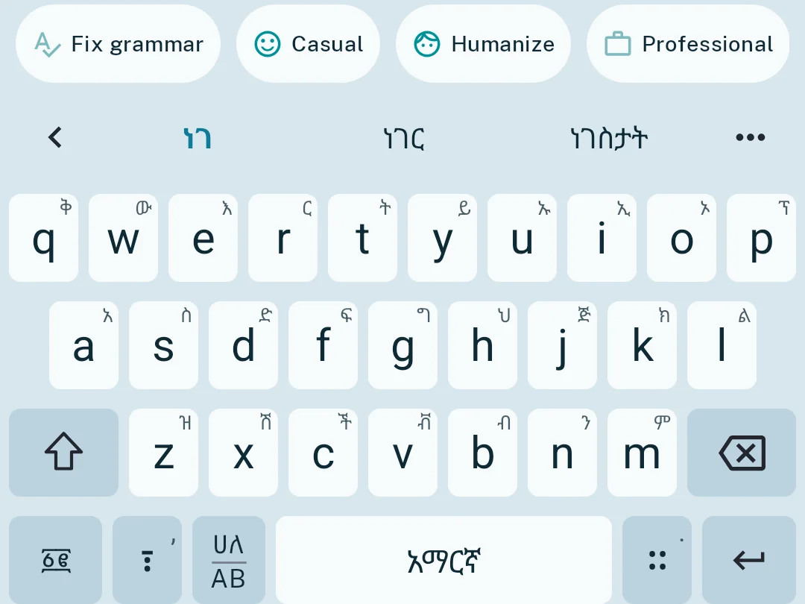
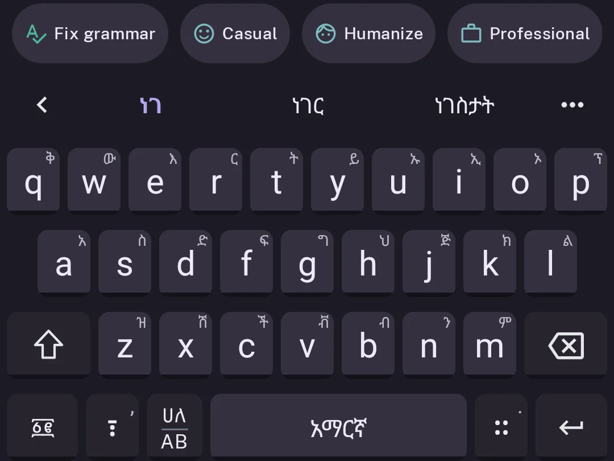
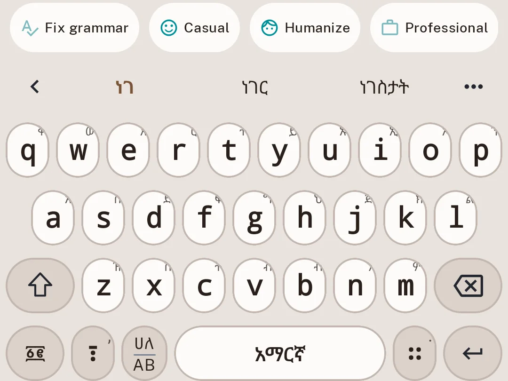
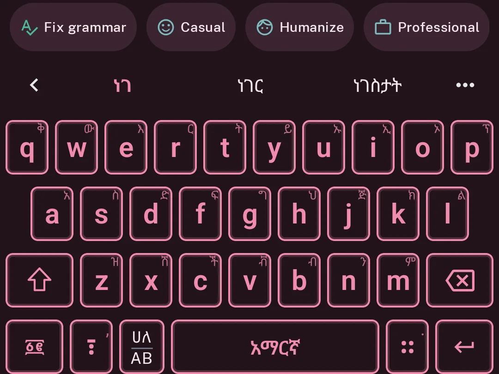
Type what you hear. Addiyon reads the whole word and turns it into Fidel, instantly.
Type the sounds in Latin.
See the Fidel compose, live.
Tap a suggestion to commit.
Get Addiyon Keyboard on Google Play and start typing Amharic today.
Get it on Google Play